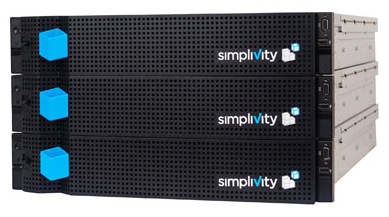
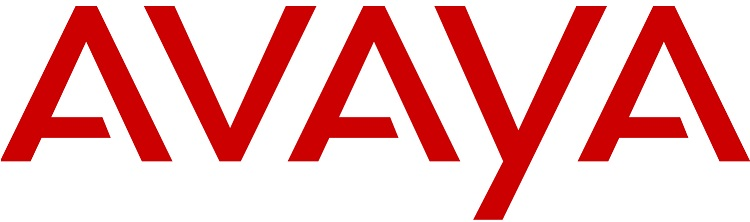

We are very pleased to announce today that we have formed four strategic partnerships to allow us to resell and advise on technologies that we believe are the current leaders in their fields. The four alliances are with VCE, SimpliVity, Avaya and ScienceLogic. We chose these partners as they all have strong and complimentary offerings in the Data Centre space.
There is no such thing as truly independent advice in the IT industry. Everyone has an angle whether it is undisclosed kickbacks from vendors or just personal bias. At 17 Ways we are upfront about our relationships and the technologies that we believe are the best. That doesn't mean we will push those technologies if they aren't the right answer for our customers though. The most important thing for us is our reputation. We will only ever recommend solutions that we believe will work. By having these close relationships we are much better placed to be able to decide if a solution will be right for your requirements or not.
Additionally by being partners with these vendors we can be much more involved in the implementations ensuring that we drive towards successful conclusions by having more skin in the game. With all technology there is a lot more to being successful than just picking the right solution. With our experience of working on the customer side we believe we can add significant value to your business with our pre and post sales support.
Technology resellers used to be called VARs(Value Added Resellers) and although the term has fallen into disuse we believe that is very much the space that we play in, helping customers to achieve results that they might not have achieved without our help.
Customer outcome is the most important thing for us. We are a small company and we need referrals and repeat business in order to survive. Despite our fully disclosed relationships with vendors, we will never push a solution that we don't believe to be the best choice for our customers.
17 Ways are a reseller of VCE's converged and hyper-converged enterprise technologies. VCE's Vblock systems are an ideal platform for running your core x86 workloads. VCE are a joint venture between EMC, VMWare and Cisco to build fully integrated, converged systems that combine the best available components into a single system that has been fully tested and is ready to deploy upon delivery.

If it is critical to the organisation, run it on vBlock.
Click here to find out more about the VCE product range.
SimpliVity are a startup company in the hyper-converged space with $101M of financing behind them. They offer the best platform for running a virtualised farm that we have seen. SimpliVity handles absolutely everything that you need below the hypervisor level including de-duplication, compression and automated backups. It is exciting new technology that is perfect for many uses such as VDI, Branch Office, Data Centre consolidation and development and testing. For smaller organisations a SimpliVity system may be all that need in your Data Centre (in fact 65% of SimpliVity customers use nothing else).
With three full years of development completed before going to market, SimpliVity is the most advanced hyper-converged platform available today.
Click here to find out more about SimpliVity.
Avaya are best known for the communication products including contact centre, voice and collaboration tools. Our primary interest in Avaya is in their fabric switching where the award winning Fabric Connect product has made the Software Defined Network (SDN) a reality.
Avaya's Data Centre technology complements the other products well, providing extremely fast connectivity, better control and a set of people-focused tools.
Click here to find out more about Avaya.
ScienceLogic's EM7 monitoring tool is built to provide the management capabilities required in a hybrid and virtualised world. It represents the next evolution of monitoring and we believe it is an essential component for any successful implementation of converged, hyper-converged or cloud system.

ScienceLogic is the first software product to be added to our range at 17 Ways. We believe it perfectly complements the hardware options that we sell and completes a practical and compelling range of Data Centre technologies.
Click here to find out more about ScienceLogic.
As an IT solutions provider we want to be close to the technology. We are a looking to provide the best service that we can to our customers by leveraging our depth of experience, our knowledge of the market and our strong product knowledge around the hardware and software that we sell. We believe this uniquely places us to be able to help you with your technology challenges. We are equally happy advising you, executing for you, getting you the best price on the products that we sell or following through with the implementation. We are happy to be involved at any stage of the process if we can add value to your organisation.
If you would like to know more about this announcement or anything else about 17 ways please contact us at info@17ways.com.au or call us on 1300 17WAYS.
regards
John, Tim and Mark.